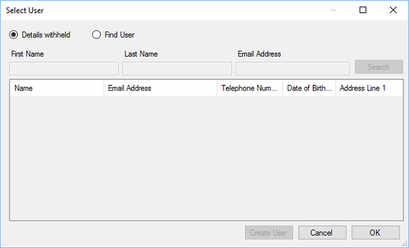

Upon clicking Mark as paid you will be prompted to enter the client details.

Where possible you should always find or create a user for the sale, this will provide future
opportunities for marketing etc.
Click OK to continue or cancel to return to the Till.